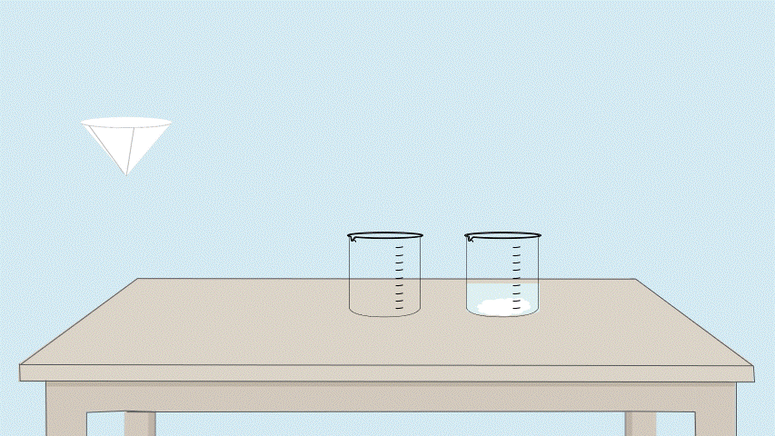
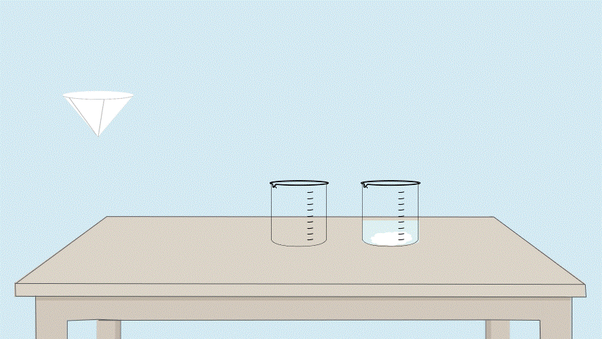

Determination of Magnesium Oxide
Step 2: Filtration of Precipitate
About this step:
In this step, we will separate the magnesium ammonium phosphate precipitate from the liquid by filtration.
Use a clean funnel with filter paper, and pour the mixture carefully to retain all the precipitate on the filter paper. This process isolates the magnesium compound from other soluble ions in the filtrate.
Click on the filter setup to pour the solution and collect the solid residue on the filter paper.
 

👇